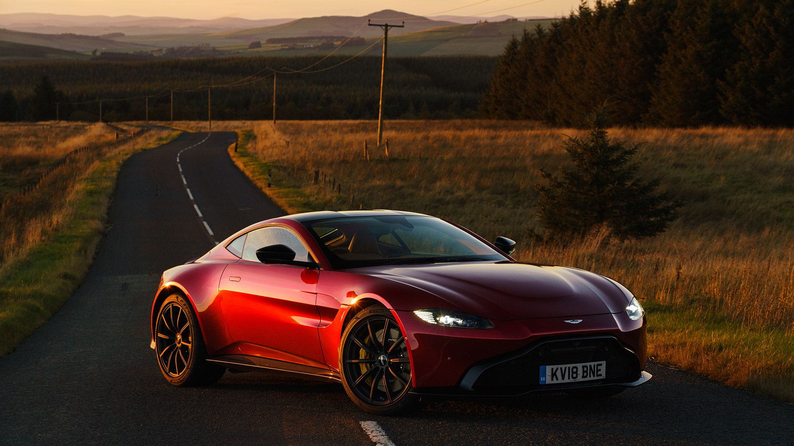
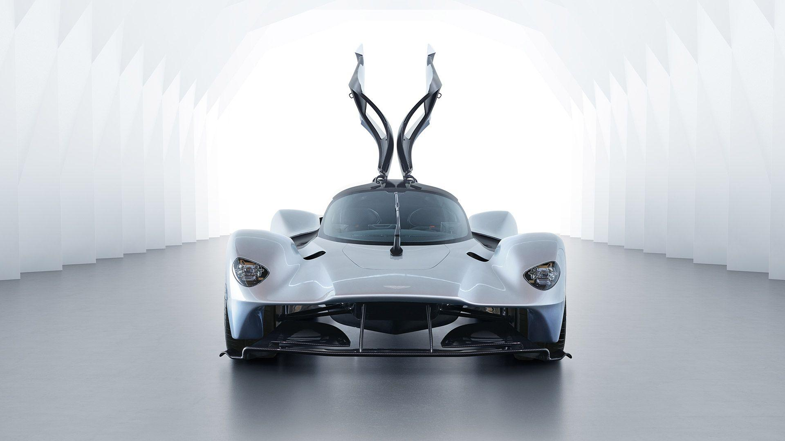

ASTON MARTIN DB11
The Aston Martin DB11 has 1 Petrol Engine on offer. The Petrol engine is 3998 cc . It is available with Manual transmission. Depending upon the variant and fuel type the DB11 has a mileage of 7.46 to 8.93 kmpl . The DB11 is a 2 seater 8 cylinder car and has length of 4739, width of 1940 and a wheelbase of 2804.

ASTON MARTIN VANTAGE
The Aston Martin Vantage has 1 Petrol Engine on offer. The Petrol engine is 3998 cc . It is available with Manual transmission. Depending upon the variant and fuel type the Vantage has a mileage of . The Vantage is a 2 seater 8 cylinder car and has length of 4739mm, width of 1940mm and a wheelbase of 2804mm.

ASTON MARTIN VALKYRIE
The Aston Martin Valkyrie has entered full production with the completion of the first customer car announced. The groundbreaking hypercar was first teased in concept form five years ago, and early customers can now expect delivery of their finished versions in the coming weeks.150 units of the Valkyrie coupe are being hand-built at Aston Martin’s UK headquarters in Gaydon, taking more than 2,000 man-hours each to create. All are already sold. A further 85 Valkyrie Spiders and 40 track-only Valkyrie AMR Pros will follow, commanding a premium over the £2-3 million price tag of the standard coupe.